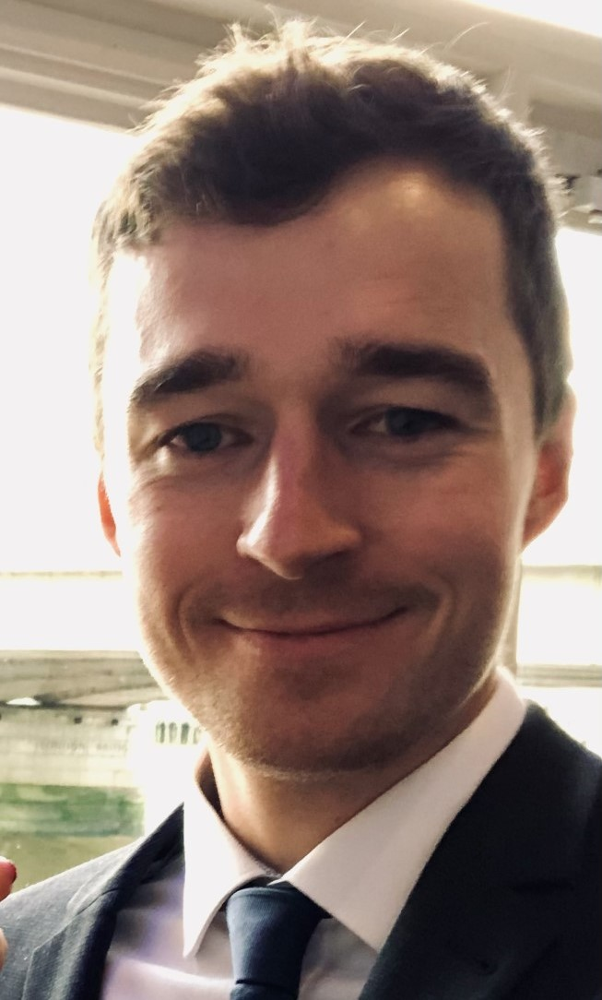

Sebastian Horstmann
As a passionate tech entrepreneur and expert in sensors, I am dedicated to using technology and entrepreneurship to drive meaningful impact. With expertise in on-device machine learning, property and sensor technologies, I aim to innovate for a better future.
Projects
I co-founded Cosysense and open-seneca where we develop cutting-edge solutions to enhance the efficiency and sustainability of communal environments and global air quality monitoring.
If you would like to get in touch, please contact me via my social media handles above.
Academic Background
- PhD in Engineering, University of Cambridge, 2022 - Dissertation on "Capacitive touchscreen sensors for the measurement of ions in electrolytes".
- MRes in Sensor Technologies and Applications, University of Cambridge, 2018 - Thesis on "CamBike Sensor: A Cyclist's Mobile Sensor Hub for Big Data Citizen Science".
- MSc in Medical Physics, Heinrich Heine University Düsseldorf, 2017 - Thesis on "Microfluidic Femtoliter Droplets Exposed to Rough Laser Potentials".
Significant Publications
Sebastian Horstmann, Cassi J. Henderson, Elizabeth A.H. Hall, Ronan Daly, "Capacitive touchscreen sensing - A measure of electrolyte conductivity," Sensors and Actuators B: Chemical, Volume 345, 2021, ISSN 0925-4005.